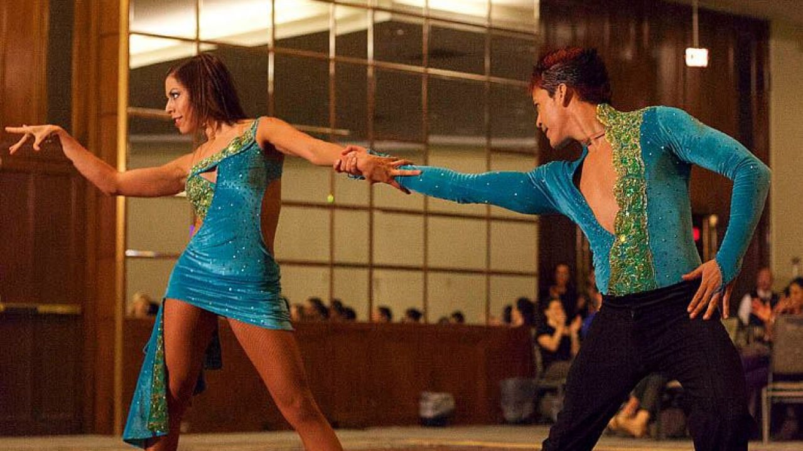
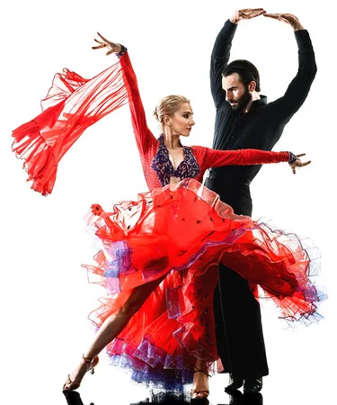
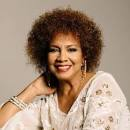
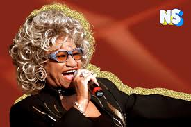

La salsa es la etiqueta predilecta para referirse al conjunto de géneros musicales bailables resultante de la síntesis del son cubano y otros géneros de la música caribeña como el Guaguancó, la Guajira, el Boogaloo, el Mambo, el Montuno, la Plena, la Bomba, el Cha Cha Cha, la Guaracha, la Descarga y los géneros estadounidenses como el jazz y el blues. La salsa se consolidó como un éxito comercial por músicos de origen hispano (predominantemente cubanos y puertorriqueños) en Nueva York en la década de 1960, y por la labor de quien fue su principal armador, el dominicano Johnny Pacheco.
Finalmente, la salsa se extendió por toda América Latina, dando lugar a variantes regionales como la cubana, puertorriqueña, panameña, dominicana, colombiana, ecuatoriana y de otros países de la región. La salsa abarca varios estilos como la salsa dura, la salsa romántica.


¿Que nos trasmite el genero de musica Salsa?
Es un ritmo que nos encanta porque transmite alegría y energía. Esto, a nivel emocional es increíblemente ventajoso porque además de ayudarnos a liberar tensiones, nos permite dejar las preocupaciones a un lado y recargarnos de la positividad necesaria para afrontar la vida¿Que nos trasmite la salsa
FACTS
La salsa es un baile latino, asociado con el género musical del mismo nombre, que se popularizó por primera vez en los Estados Unidos en la década de 1960 en la ciudad de Nueva York. La salsa es una mezcla de bailes cubanos, como el mambo, la pachanga y la rumba, además de bailes americanos como el swing y el tap.
Cantantes de la salsa que no te puedes perder
Marc Anthony
Marco Antonio Muñiz, conocido profesionalmente como Marc Anthony, es un cantante, compositor y actor estadounidense. Es el artista de salsa tropical más vendido de todos los tiempos. Ganador de cuatro premios Grammy y ocho premios Grammy Latino, ha vendido más de 12 millones de álbumes en todo el mundo.
Oscar D´leon
Oscar Emilio León Somoza, conocido como Oscar D'León, y cariñosamente llamado El Faraón de la Salsa, El León de la Salsa y el Sonero del Mundo, es un músico venezolano mejor conocido por su trabajo con la música salsa. Es autor de "Llorarás", que grabó en 1974 con su grupo Dimensión Latina
Choco Orta

Choco Orta es una cantante, percusionista, bailarina y actriz latina, tropical y de salsa, nacida en Santurce, Puerto Rico.
Celia Cruz

Úrsula Hilaria Celia de la Caridad Cruz Alfonso, conocida como Celia Cruz, fue una cantante cubana y una de las artistas latinas más populares del siglo XX. Cruz saltó a la fama en Cuba durante la década de 1950 como cantante de guarachas, ganándose el apodo de "La Guarachera de Cuba".